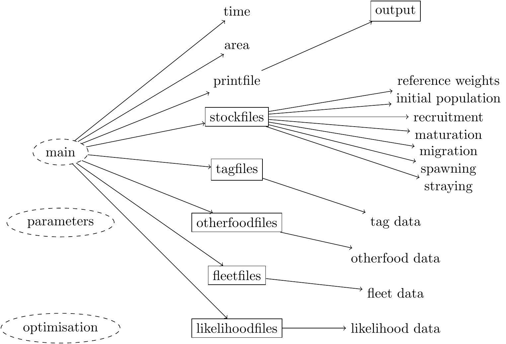
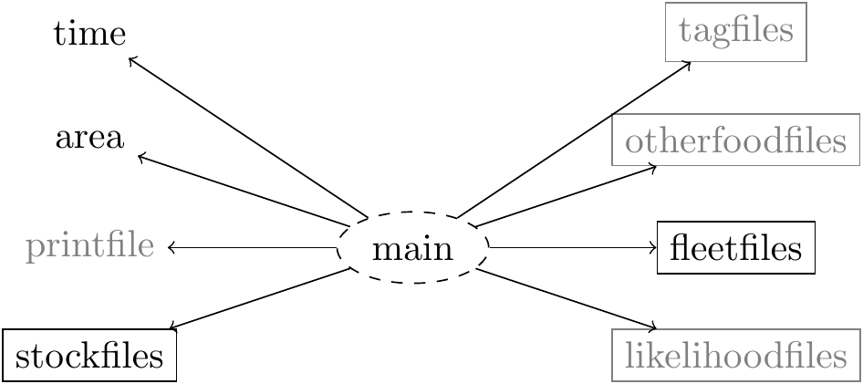
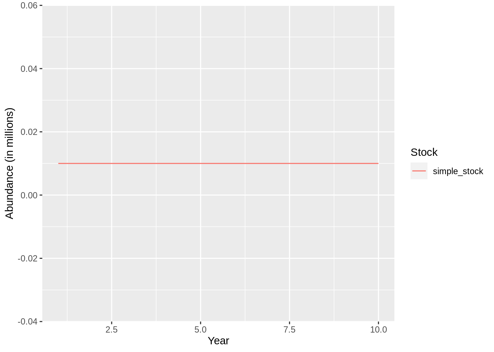
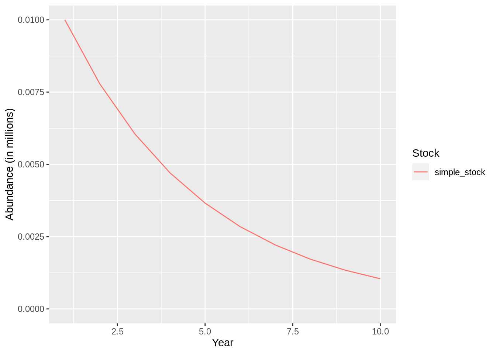
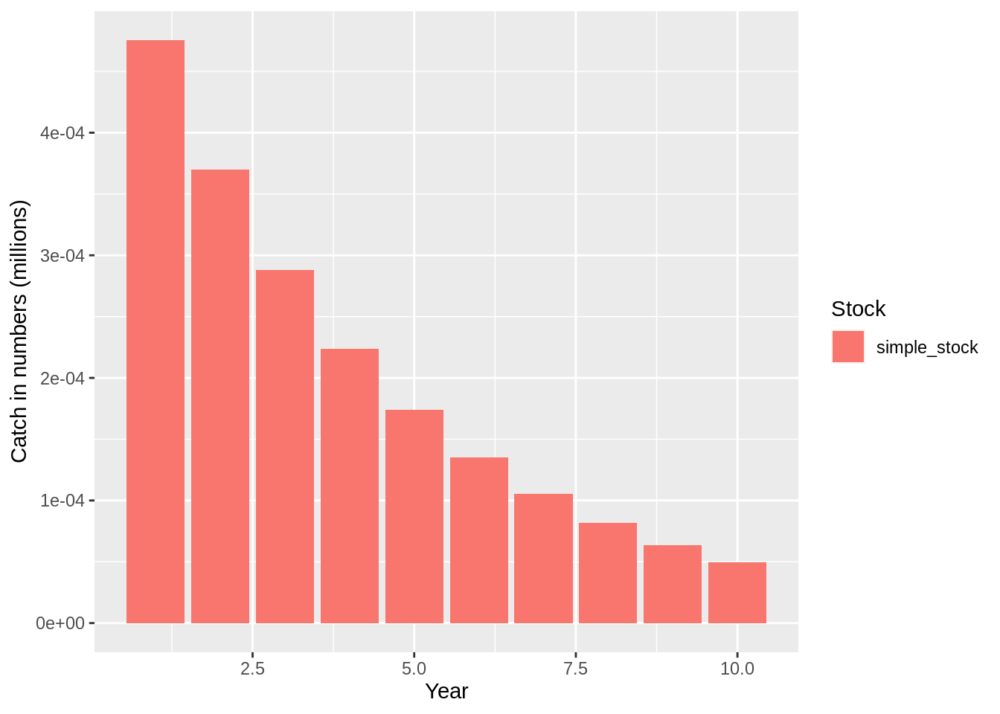
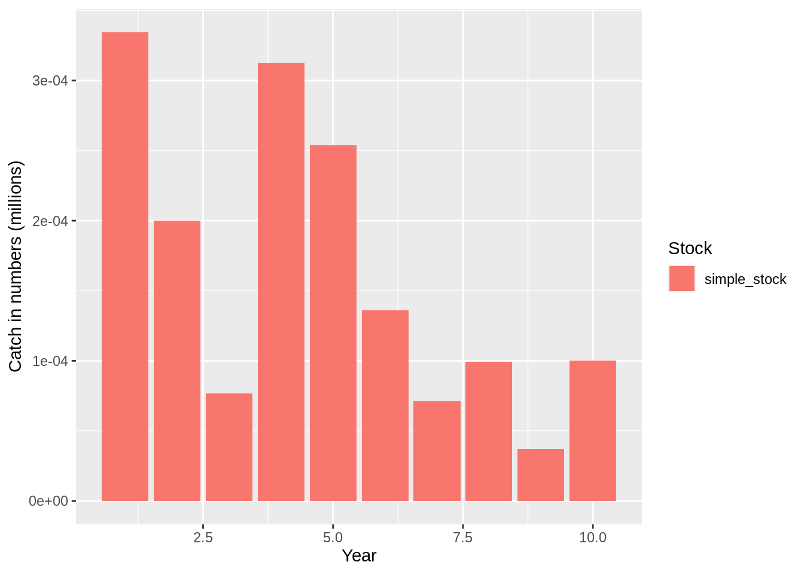
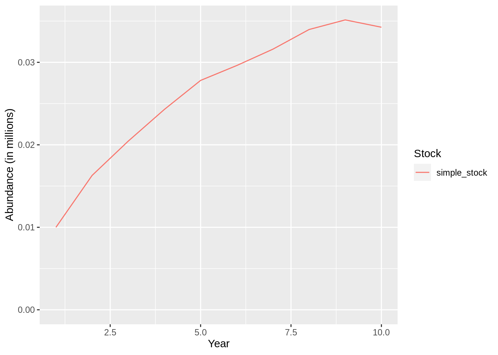
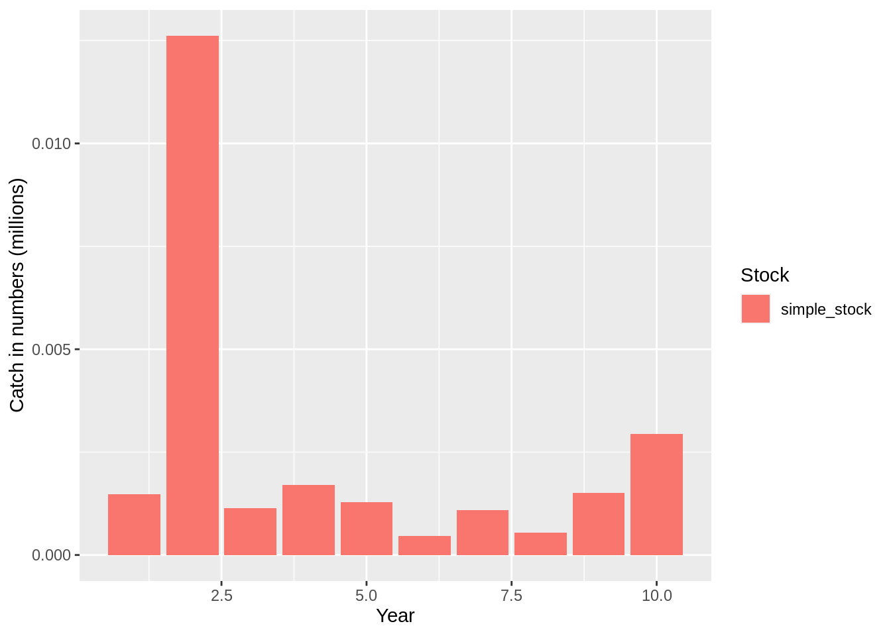

4 Getting started with the Gadget framework
Install devtools, Rgadget and mfdb. Rgadget is under constant construction so please remember to update it regularly (e.g., monthly).
Note that you can update all packages, both from github and CRAN using the update_packages command from devtools
4.1 What is Rgadget?
Because it was originally designed as an ecosystem simulator, Gadget already has a number of optional features structurally integrated with basic population dynamics, making it extremely flexible for representing a wide variety of real-life biological scenarios (e.g., substock structure, length-based processes, predator-prey dynamics, temperature-dependent growth). However, Gadget was created when Unix workstations were the most powerful and popular operating systems available, and therefore lacks by itself a user-friendly GUI. It is a collection of C++ scripts that comprise its own program, similar to models created using ADMB. Running Gadget requires providing a rather large set of individual text files that specify model settings and data. As a result, creating more complex models involving a large set of similar input text files can become tedious and error-prone, and can impair reproducability.

Rgadget was intended to be a solution to this problem, by linking the power behind Gadget with the familiar R interface. Therefore, 90% of Rgadget’s functionality is file and data handling: it creates files that are in a correct format so that Gadget understands them, creates organized directories for storing those files, takes care of main file dependencies and compatibility issues, and creates a direct pipeline for inserting data into such files. It additionally runs Gadget, implements an iterative reweighting algorithm to aid with data weighting issues when there are multiple sources of data, reads file output, and merges input and output data so that meaningful illustrative and diagnostic figures can be made (a variety of which come predefined). Rgadget is your best friend if you want to quickly make reproducable, trackable, interpretable, and sharable models using Gadget.
Gadget has a variety of convenience functions included that will become more visible as examples are walked through, but the main types of functions to recognize include:
- file creation functions (e.g, gadgetfile, gadgetstock, gadgettime, gadgetfleet, gadgetlikelihood, gadgetdata, etc.),
- file I/O functions (e.g.,write.gadget.file, read.gadget.file, etc.),
- file modification functions (e.g., init_guess, gadget_update),
- functions that run Gadget (e.g., callGadget, gadget.iterative, gadget.forward),
- functions that compile input and output and create plots to analyze model fits (e.g., gadget.fit, bind.gadget.fit).
Using this set of functions, the general work flow for using Gadget to fit a statistical model via Rgadget is demonstrated in our examples and follows the pattern:
- Create new Gadget input file objects within R and write them to disk to comprise an initial Gadget model structure.
- Run an initial Gadget simulation to test files and conveniently create input paramater files.
- Read certain Gadget model files back into R, so that they can be modified and then overwritten.
- Run an initial Gadget fitting procedure to conveniently create more input files (i.e., decent starting values).
- Set optimisation function parameters and run a statistical Gadget model run using reiterative weighting to determine relative contribution of each data source to the objective function.
- Visualize the model fit.
As most programming errors and debugging occur in steps 1 - 4, most of this course will focus on these steps. Statistical model fitting and visualization will be demonstrated, but details regarding the statistical theory behind fitting procedures, analysis of model fit, and diagnostics are beyond the scope of this course.
4.2 Using Rgadget
To use the Rgadget functions you will need to load it into your R workspace in the usual manner:
For convenience Rgadget will also load the tidyverse package as it is used extensively when interacting with Gadget and viewing the output. As noted above Rgadget has a number of functions and we will introduce the main functions in Rgadget as we go through the tutorial.
Here we will focus on setting up a simple dummy model using the gadgetfile function and
functions that are its derivatives. The gadgetfile function is low level function that
creates an R object that can be exported to files that coheres to the Gadget file format,
described in the Gadget userguide. Essentially a
Gadget file is structured by a list of named components and within those components there
are named settings. As an example of this you can create your own custom Gadget file by
specifying the components as named lists embedded within a named list:
dummy <-
gadgetfile('test',file_type = 'generic',
components = list(fruit=list(apple=1,orange=5),
vegetable=list(cucumber=1)))
dummy## ; Generated by Rgadget 0.5
## [fruit]
## apple 1
## orange 5
## [vegetable]
## cucumber 1You will note that when calling the gadgetfile object the printed output will be in
the same format as the resulting Gadget file. This for our mainly convenience as you
will be able to directly see if the format is incorrect, by comparing it to the format
described in the userguide, before
writing it to file. If you need however to access individual components of you can of
course do so by calling the name of the component directly:
## $apple
## [1] 1
##
## $orange
## [1] 5and if you want to investigate the structure further you can call str on the object:
## List of 2
## $ fruit :List of 2
## ..$ apple : num 1
## ..$ orange: num 5
## $ vegetable:List of 1
## ..$ cucumber: num 1
## - attr(*, "file_name")= chr "test"
## - attr(*, "file_config")=List of 6
## ..$ file_type : chr "generic"
## ..$ mainfile_section : chr NA
## ..$ bare_component : chr "FALSE"
## ..$ sub_component : chr ""
## ..$ implicit_component: chr ""
## ..$ df_component : chr ""
## - attr(*, "class")= chr [1:2] "gadgetfile" "list"The file type argument in gadgetfile allows the function to customize the output
depending to the various quirks of the file. You can see the different file types
currently allowed for by gadgetfile by calling gadget_filetypes:
| file_type | mainfile_section | bare_component | sub_component | implicit_component | df_component |
|---|---|---|---|---|---|
| main | NA | FALSE | |||
| time | timefile | FALSE | |||
| area | areafile | FALSE | ^(temperature)$ | ^(temperature)$ | |
| stock | stockfiles | ^(initialconditions)$ | ^(suitability)$ | ^(doesgrow|naturalmortality|iseaten|doeseat|doesmigrate|doesmature|doesmove|doesrenew|doesspawn|doesstray)$ | |
| tag | tagfiles | FALSE | |||
| otherfood | otherfoodfiles | FALSE | |||
| fleet | fleetfiles | FALSE | ^(suitability|amount)$ | ||
| likelihood | likelihoodfiles | FALSE | |||
| printfiles | FALSE | ||||
| timevariable | NA | FALSE | ^(data)$ | ^(data)$ | |
| stockvariable | NA | FALSE | |||
| generic | NA | FALSE | |||
| data | NA | FALSE |
The output can then subsequently be written to a file using write.gadget.file:
4.3 Creating model input files
Having described how gadgetfile works we can now start to define our first model,
which we will refer to as the “Simple model”. This is done by first deciding where
to put the model and the associated files. Rgadget helps you by creating a convenience
function gadget.variant.dir whichs set up a working directory for the Gadget model:
## [1] "simple_model"
## attr(,"mainfile")
## [1] "main"
## attr(,"class")
## [1] "gadget.variant" "list"You will notice that gd is just a simple string with the location of the model, which
in this case is a folder named simple_model within the current working directory, and
an attribute to that string called mainfile. The main file is, as illustrated below,
the root of the Gadget input file structure, specifiying all the paths to the definition
of the ecosystem that is being simulated, such as the stocks and time period. By invoking
the gadget.variant.dir command a new folder for the model is created and subsequent
edits to the gd object will update the main file as necessary.

We will now go through each of these different file types and show you how to generate them. Note that the grayed files in the illustration above will be covered at a later stage.
4.3.1 Time file
Gadget is structured as a forward simulator, so in order for it to run we will first need to define the time period (‘year’), and number of subannual time steps (‘step’), for the projection. We do so by creating a data frame setting up the schedule for the simulation:
and create a new time file using gadgetfile by explicitly setting the file type as
‘time’:
## think about writing a special function for this using the schedule data.frame
gadgetfile('Modelfiles/time',
file_type = 'time',
components = list(list(firstyear = min(schedule$year),
firststep=1,
lastyear=max(schedule$year),
laststep=4,
notimesteps=c(4,3,3,3,3)))) %>% ## number of time steps and step length in months
write.gadget.file(gd)Note that arbitrary years and timesteps can be defined for the model, as appropriate for the data and the species simulated. One can for instance start the simulation in 1981 to 2019, with four timesteps with a timestep length of 1,2,4 and 5 months. Typically, though, Gadget models tend to be set up in a set number of year with quarterly timesteps.
4.3.2 Area file
Since Gadget allows for simulations in multiple areas these need to be explicitly defined.
Various processes, such as fleet operations and migrations, in the model can then be
explicitly defined by area. As for the time file the areas are defined in the area file
which you can create using gadgetfile:
gadgetfile('Modelfiles/area',
file_type = 'area',
components = list(list(areas = 1,
size = 1,
temperature = schedule %>%
mutate(area = 1, temperature = 5)))) %>%
write.gadget.file(gd)which will generate a file starting with:
## ; Generated by Rgadget 0.5
## areas 1
## size 1
## temperature
## ; year step area temperature
## 1 1 1 5
## 1 2 1 5
## 1 3 1 5
## 1 4 1 5
## 2 1 1 5The areas are defined with attributes, size of the area and average temperature for each time step. Note although these attributes are rarely used in practice they will need to be defined for all areas and, in the case of temperatrue, time steps in order for the simulation to run.
4.3.3 Stockfiles
Rgadget has a number of convenience functions when dealing with more complicated files. These functions are all derivatives of gadgetfile and thus can be written to file using write.gadget.file. Here we will start off by creating a skeleton stock file using the gadgetstock function:
## ; Generated by Rgadget 0.5
## stockname simple_stock
## livesonareas
## minage
## maxage
## minlength
## maxlength
## dl
## refweightfile
## growthandeatlengths
## doesgrow 1
## growthfunction lengthvbsimple
## growthparameters #simple_stock.Linf (* 0.001 #simple_stock.k) #simple_stock.walpha #simple_stock.wbeta
## beta (* 10 #simple_stock.bbin)
## maxlengthgroupgrowth 15
## naturalmortality
## iseaten 0
## doeseat 0
## initialconditions
## doesmigrate 0
## doesmature 0
## doesmove 0
## doesrenew 0
## doesspawn 0
## doesstray 0This will define a stock named “simple_stock” within the “simple_model” ecosystem. This
stock file is however not a complete file so we will need to edit the stock object by
adding the necessary attributes. This is done using gadget_update which, as the name
suggests, allows to you to update individual components of the file. The first argument to
gadget_update after the stock file is the name of the component you want update followed
by the variables within the component you want to update. So let’s start by setting
mininum and maximum age and other similar attributes in the stock component:
stock %>%
gadget_update('stock',
livesonareas = 1,
maxage = 1,
minage = 1,
minlength = 0,
maxlength = 2,
dl = 1)## ; Generated by Rgadget 0.5
## stockname simple_stock
## livesonareas 1
## minage 1
## maxage 1
## minlength 0
## maxlength 2
## dl 1
## refweightfile
## growthandeatlengths Aggfiles/simple_stock.stock.len.agg
## doesgrow 1
## growthfunction lengthvbsimple
## growthparameters #simple_stock.Linf (* 0.001 #simple_stock.k) #simple_stock.walpha #simple_stock.wbeta
## beta (* 10 #simple_stock.bbin)
## maxlengthgroupgrowth 15
## naturalmortality #simple_stock.M
## iseaten 0
## doeseat 0
## initialconditions
## doesmigrate 0
## doesmature 0
## doesmove 0
## doesrenew 0
## doesspawn 0
## doesstray 0As gadget_update was designed to allow the user to edit the Gadget file using a piping
mechanism, a la tidyverse, we can of course do multiple edits using gadget_update in one
go:
stock <-
stock %>%
gadget_update('stock',
livesonareas = 1,
maxage = 1,
minage = 1,
minlength = 0,
maxlength = 2,
dl = 1) %>%
gadget_update('doesgrow',0) %>%
gadget_update('naturalmortality',0) %>%
gadget_update('refweight',data=tibble(length=0:2,mean=0:2)) %>%
gadget_update('initialconditions',
normalparam = tibble(age = 1,
area = 1,
age.factor = 1,
area.factor =1,
mean = 1,
stddev = .1,
alpha = 1,
beta = 1))
stock %>%
write.gadget.file(gd)
stock## ; Generated by Rgadget 0.5
## stockname simple_stock
## livesonareas 1
## minage 1
## maxage 1
## minlength 0
## maxlength 2
## dl 1
## refweightfile Modelfiles/simple_stock.refwgt
## growthandeatlengths Aggfiles/simple_stock.stock.len.agg
## doesgrow 0
## naturalmortality 0
## iseaten 0
## doeseat 0
## initialconditions
## minage 1
## maxage 1
## minlength 0
## maxlength 2
## dl 1
## normalparamfile Modelfiles/simple_stock.init.normalparam
## doesmigrate 0
## doesmature 0
## doesmove 0
## doesrenew 0
## doesspawn 0
## doesstray 0There is a lot to digest from the code above so it is worth stopping and taking a look at each element:
- The first call to
gadget_updateedited the attributes of the “stock” part of the file as discussed above. - The second call to “doesgrow” turned off all growth processes in the model for this stock by setting
doesgrowto0. (Note that we will discuss growth models in later chapters). - Natural mortality was set 0, meaning that fish in the model will not die of natural causes.
- The weight of the fish was defined.
- The initial number of fish and their size range at age was defined via “initalconditions”. The initial number of fish is determined in multiples of 10 000
fish, so to derive the number of fish at a certain age and in a specific area you need
to multiply the
area.factorwith theage.factor. With in the same cell you can r ead the mean length and standard deviation from themeanandstddevcolumns, and the paramters of the weight–length relationship (\(w = \alpha l^\beta\)) can be read from thealphaandbetacolumns.
Note that gadget_update updates the stock file based on their implicit components, which are the following:
| Component | Description |
|---|---|
| stock | Basic information (age, length, dl, area) |
| doesgrow | The growth model, see this |
| naturalmortality | An entry for each age group |
| iseaten | If defined then the stock is considered to be a prey, 0 otherwise |
| doeseat | If defined the stock is a predator and prey selection needs to be defined, see this |
| doesmigrate | |
| doesmature | |
| doesmove | |
| doesrenew | |
| doesspawn | |
| doesstray |
The stock file essentially defines a stock with 10 000 fish that do not grow, consume
or die for the duration of the simulation. By writing this file to the disk R has
behind the scenes created a folder named simple_model with all the necessary files:
## [01;34msimple_model/Aggfiles[0m [01;34msimple_model/Modelfiles[0m simple_model/main
## simple_model/simple_stock4.4 Starting a simulation
To test if this is working we can run a single simulation first to check for any errors or warning in our setup.
## [1] "simple_model"
## attr(,"mainfile")
## [1] "main"
## attr(,"class")
## [1] "gadget.variant" "list"This gives you a warning that no understocking likelihood is available. The understocking likelihood is a penalty function used to prevent negative consumption, i.e. more fish being eaten and/or fished than is available. We can safely ignore this warning for the time being. If you get additional errors, ending with
...running command 'gadget -s -main main -log simple_log ' had status 1your Gadget run did
not work. At this stage in the tutorial, it is likely becuase you have previously run
later code from the next section, which has provided additional old files to your
Gadget model directory (see above) that do not match the specifications above.
This can be easily fixed by deleting the ‘simple_log’ directory and then rerunning
the code on this page from the point of defining gd.
After running Gadget we see that two new files have been
added to the directory, the parameter file (params.out) and the log file
(simple_log). We will discuss the parameter file in more detail in the following
sections but for now lets look at the log file:
If and when you have errors, such as the ‘…status 1’ error above, the log file is the best place to start trying to figure out why the error occurs.
## [1] "Gadget version 2.3.5 running on fv-az32 Wed Sep 30 22:04:55 2020"
## [2] "Log file to record Gadget actions that take place during this run"
## [3] ""
## [4] "Starting Gadget from directory: /home/runner/work/gadget-course/gadget-course/simple_model"
## [5] "using data from directory: /home/runner/work/gadget-course/gadget-course/simple_model"
## [6] ""
## [7] "Checking to see if file params.out can be opened ... OK"
## [8] ""
## [9] "Checking to see if file main can be opened ... OK"
## [10] "Opening file main"
## [11] "Checking to see if file Modelfiles/time can be opened ... OK"
## [12] "Opening file Modelfiles/time"
## [13] "Read time file - number of timesteps 40"
## [14] "Closing file Modelfiles/time"
## [15] "Checking to see if file Modelfiles/area can be opened ... OK"
## [16] "Opening file Modelfiles/area"
## [17] "Read temperature data - number of entries 40"
## [18] "Read area file - number of areas 1"
## [19] "Closing file Modelfiles/area"
## [20] "Checking to see if file simple_stock can be opened ... OK"
## [21] "Opening file simple_stock"
## [22] "Checking to see if file Aggfiles/simple_stock.stock.len.agg can be opened ... OK"
## [23] "Opening file Aggfiles/simple_stock.stock.len.agg"
## [24] "Read length aggregation file - number of entries 2"
## [25] "Closing file Aggfiles/simple_stock.stock.len.agg"
## [26] "Read basic stock data for stock simple_stock"
## [27] "Read growth data for stock simple_stock"
## [28] "Read natural mortality data for stock simple_stock"
## [29] "Read prey data for stock simple_stock"
## [30] "Read predator data for stock simple_stock"
## [31] "Checking to see if file Modelfiles/simple_stock.init.normalparam can be opened ... OK"
## [32] "Opening file Modelfiles/simple_stock.init.normalparam"
## [33] "Read initial conditions data file - number of entries 1"
## [34] "Closing file Modelfiles/simple_stock.init.normalparam"
## [35] "Read initial conditions data for stock simple_stock"
## [36] "Read migration data for stock simple_stock"
## [37] "Read maturity data for stock simple_stock"
## [38] "Read transition data for stock simple_stock"
## [39] "Read renewal data for stock simple_stock"
## [40] "Read spawning data for stock simple_stock"
## [41] "Read straying data for stock simple_stock"
## [42] "Read stock OK - created stock simple_stock"
## [43] "Closing file simple_stock"
## [44] "Closing file main"
## [45] ""
## [46] "Finished reading model data files, starting to run simulation"
## [47] ""
## [48] ""
## [49] "Initialising stock simple_stock"
## [50] "Calculated initial condition data for stock simple_stock"
## [51] "Warning in input files - no understocking likelihood component found"
## [52] ""
## [53] ""
## [54] "Reset time in the simulation to timestep 1"
## [55] "Reset natural mortality data for stock simple_stock"
## [56] "Calculated initial condition data for stock simple_stock"
## [57] "Reset stock data for stock simple_stock"
## [58] "The simulation has reached the last timestep for the current model run"
## [59] ""
## [60] "The current likelihood scores for each component are:"
## [61] ""
## [62] "The current overall likelihood score is 0"
## [63] ""
## [64] "Checking to see if file params.out can be opened ... OK"
## [65] "Opening file params.out"
## [66] "Closing file params.out"
## [67] ""
## [68] "Total number of warnings was 1"
## [69] ""
## [70] "Gadget simulation finished OK - runtime was 0 seconds"We can now gather the output from the model using gadget.fit:
## [1] "Reading input data"
## [1] "Running Gadget"
## [1] "Reading output files"
## [1] "Gathering results"
## [1] "Merging input and output" and the fit object contains a number of useful datasets that can be used for further analysis:
## [1] "sidat" "resTable" "nesTable"
## [4] "suitability" "stock.recruitment" "res.by.year"
## [7] "stomachcontent" "likelihoodsummary" "catchdist.fleets"
## [10] "stockdist" "SS" "stock.full"
## [13] "stock.std" "stock.prey" "fleet.info"
## [16] "predator.prey" "params" "catchstatistics"4.5 Gadget variables
It can be tedious to change all the input files whenever you want to try a different value for a certain input parameter. For example if you want to specify natural mortality as some thing else than 0 you can always do:
## ; Generated by Rgadget 0.5
## stockname simple_stock
## livesonareas 1
## minage 1
## maxage 1
## minlength 0
## maxlength 2
## dl 1
## refweightfile Modelfiles/simple_stock.refwgt
## growthandeatlengths Aggfiles/simple_stock.stock.len.agg
## doesgrow 0
## naturalmortality 0.2
## iseaten 0
## doeseat 0
## initialconditions
## minage 1
## maxage 1
## minlength 0
## maxlength 2
## dl 1
## normalparamfile Modelfiles/simple_stock.init.normalparam
## doesmigrate 0
## doesmature 0
## doesmove 0
## doesrenew 0
## doesspawn 0
## doesstray 0And if you want to try many version of natural mortality you can obviously repeat
this process for different values of M. There is however a more convenient approach
to do this, namely Gadget switches or parameters. A Gadget parameter can be inserted
instead of any number in the input file (apart from likelihood data), and are marked
with the # character. So for the case of natural mortality we can now update the
stock file to include a Gadget parameter by:
## ; Generated by Rgadget 0.5
## stockname simple_stock
## livesonareas 1
## minage 1
## maxage 1
## minlength 0
## maxlength 2
## dl 1
## refweightfile Modelfiles/simple_stock.refwgt
## growthandeatlengths Aggfiles/simple_stock.stock.len.agg
## doesgrow 0
## naturalmortality #M
## iseaten 0
## doeseat 0
## initialconditions
## minage 1
## maxage 1
## minlength 0
## maxlength 2
## dl 1
## normalparamfile Modelfiles/simple_stock.init.normalparam
## doesmigrate 0
## doesmature 0
## doesmove 0
## doesrenew 0
## doesspawn 0
## doesstray 0And now we see that the value for natural mortality has been changed from 0 to #M.
Now write this to file and rerun run Gadget.
## [1] "simple_model"
## attr(,"mainfile")
## [1] "main"
## attr(,"class")
## [1] "gadget.variant" "list"After running this, assuming we did everything correctly, we should see that the
file in the directory called params.out is no longer empty:
## ; Gadget version 2.3.5 running on fv-az32 Wed Sep 30 22:04:56 2020
## ; a simulation run was performed giving a likelihood value of 0
## ; -- data --
## switch value lower upper optimise
## M 1 -9999 9999 0This file is generated by Gadget based on the switches it encounters when reading in
the input files. It lists all parameters, their value as used in the simulation, upper
and lower bounds and whether the parameter should optimised (more on that later). You
then simply just change the value for M and rerun Gadget by supplying the parameter
file as input. This can either be done by manually editing the parameter file or
using the init_guess function:
read.gadget.parameters('simple_model/params.out') %>%
init_guess('M',value = 0.2) %>%
write.gadget.parameters(file = 'simple_model/params.in')
gadget_evaluate(params.in = 'params.in')## Warning in system(run.string, intern = TRUE, ignore.stderr = ignore.stderr):
## running command '/home/runner/work/_temp/Library/gadget2/bin/gadget -s -i
## params.in 2>/dev/null' had status 1## [1] "."Note that when supplying a parameter input you use the i argument in callGadget.
Gadget parameters have a few more tricks up their sleeves. Notably you can apply
functions or formulas to the parameter. For instance if you want multiply the value
of M by 0.1 you can write that as:
(* 0.1 #M)Note that functions and formulas are contained within round brackets, so that this
structure equates to 0.1*M.
Similarly if you need to log transform your variable as log(M), you can use:
(log #M)and these can be chained together:
(log (* 0.1 #M))equates to log(0.1*M). This allows you to apply fairly elaborate functions to the
parameter. And as in the case of variables formulas can then be inserted instead of
numbers.
These formulas can be fairly complex and Rgadget provides mechanisms to manipulate
Gadget formulae, both allowing you to evaluate the formula using parse.gadget.formula
and transform a R statement with to.gadget.formulae:
## [1] "(+ 1 (exp (* #a #b)))"## a * b## [1] 42For instance if you want the mean length at age, in for instance the initial
conditions, to be based on the Von Bertanlanfy growth function:
\[l_a = L_\infty(1 - e^{-k(a - a_0)}) \]
you can do that for age 3 as an example using the to.gadget.formulae in the following manner:
## [1] "(* #linf (- 1 (exp (* (- 1) (k (- 3 #a0))))))"4.5.0.1 Exercise
- Change the initial conditions in such a way you can control both the initial number of fish and the natural mortality using the parameter file. What happens to your stock when you change these values?
stock %>%
gadget_update('naturalmortality','#M') %>%
gadget_update('initialconditions',
normalparam = tibble(age = 1,
area = 1,
age.factor = '#init.num',
area.factor =1,
mean = 1,
stddev = .1,
alpha = 1,
beta = 1)) %>%
write.gadget.file(gd)
gadget_evaluate(params.in = 'params.in',log = 'test')
read.gadget.parameters('simple_model/params.out') %>%
init_guess('M',value = 0.2) %>%
init_guess('init.num', value = 3) %>%
write.gadget.parameters(file = 'simple_model/params.in')
read.gadget.parameters('simple_model/params.out') %>%
init_guess('M',value = 0.6) %>%
init_guess('init.num', value = 10) %>%
write.gadget.parameters(file = 'simple_model/params.in2')
fit <- gadget.fit(wgts = NULL,
## make sure that this is relative to
## gadget directory
params.file = 'params.in',
gd = gd)
fit2 <- gadget.fit(wgts = NULL,
## make sure that this is relative to
## gadget directory
params.file = 'params.in2',
gd = gd)- Play around with the Gadget formulae functions, e.g. parse and evaluate the following formula at \(\alpha = 0.1\) and \(l_{50} = 75\) :
(/ 1 (+ 1 (exp (* (* -1 #alpha) (- 50 #l50)))))4.6 Predation
As Gadget is a length-based simulation model, almost all processes are modelled in terms of length of an individual in a particular stock. The rationale for this is that natural processes are better explained in terms of size, e.g. prey must fit into the mouth of the predator. Thus predation and fleet selection are modelled in terms of size. These selection processes can very between predators (and fleets) and therefore Gadget allows the user to define this relationship in a number of ways. In Gadget there are a number of predator-prey relations that can be defined. They include the obvious case where one stock consumes another other. Additionally a cannibalistic relationship can be defined if substocks are modelled as, for example, an immature and a mature substock of the same species. Fleets (survey and/or commercial) are integrated into the model by being considered one of the predators. A fleet can harvest one or both substocks in some or all areas. These relationship are essentially factored into three components:
- The amount which the predator wants to consume
- The size range the predator is able to consume
- The size range of the prey which is available for consumption
The availability of a certain prey \(p\) and the ability for predator \(P\) to consume \(p\) is linked by a length-based suitability function \(S_{P,p}(L,l)\) of one of the following forms:
| Function name | Formula |
|---|---|
constant |
\(S_{Pp}(L,l) = \alpha\) |
straightline |
\(S_{Pp}(L,l) = \alpha + \beta l\) |
exponential |
\(S_{Pp}(L,l) = \frac{\delta}{1+e^{(-\alpha-\beta l - \gamma L)}}\) |
exponentiall50 |
\(S_{Pp}(L,l) = \frac{1}{1 + e^{-\alpha(l-l_{50})}}\) |
richards |
\(S_{Pp}(L,l) = \left(\frac{\delta}{1+e^{(-\alpha-\beta l - \gamma L)}}\right)^\eta\) |
andersen |
\(S_{Pp}(L,l) = \begin{cases} \alpha + \gamma e^{-\frac{(ln(L/l)-\beta)^2}{\delta}}, & \text{if}\ a=ln(L/l) < \beta \\\alpha + \gamma e^{-\frac{(ln(L/l)-\beta)^2}{\eta}}, & \text{if}\ a=ln(L/l) > \beta \end{cases}\) |
andersenfleet |
Same as above except \(L\) is a parameter |
gamma |
\(S_{Pp}(L,l) = \bigg(\frac{1}{(\alpha -1)\beta\gamma)}\bigg)^{(\alpha -1)}e^{(\alpha -1 -\frac{1}{\beta\gamma})}\) |
where \(L\) and \(l\) are the predator and prey lengths respectively. Note that when defining fleets, their lengths are not well defined and in the case of the Andersen suitability function you should use the fleet variant of that function. Note that \(S_{Pp}\) is in most cases between 0 and 1. \(S_{P,p}(L,l)\) should therefore be interpreted as the percentage of prey abundance at length \(l\) available to predator \(P\) at length \(L\).
To help you to choose the appropriate suitability function within Gadget, Rgadget
has a helper function, suitability, to help the user to investigate how a
particular suitability function behaves, which allows the user to input the
function name, parameters and the length of the predators and prey. Below is an
example of how to calculate and visualise the exponential suitability function for
different sizes of the predator and prey.
prey.length <- 1:50
pred.length <- seq(40,100,by=10)
param <- c(alpha = -20, beta = 0.5,gamma = 0.1, delta = 1)
suit <- suitability(params = param,
l = prey.length,
L = pred.length,
type = 'exponential',
to.data.frame = TRUE)
ggplot(suit,aes(l,suit,col=as.factor(L))) + geom_line()
In Gadget you can define whether a stock is available for consumption, i.e indicate that
the stock is a prey, or is a predator (or both) by setting the doeseat and iseaten
options in the stock file. You can make the stock available for consumption using the
following gadget_update call:
It is a little more complicated to define the predation parameters so it will be covered at a later stage, when predator-prey interactions are discussed.
4.7 Fleet operations
Human interactions in Gadget are often modelled as removals of a particular stock.
These removals are defined via a simplified stock object called Fleet, which
inherits a less complex predator behaviour than can be defined in a gadget stock
(more on that later). The fleet operations are defined as a separate model
component/file detailing the main attributes of the fleets. The defintion of a
fleet is as follows:
- Fleet type which can be one of 5 types,
TotalFleet,NumberFleet,LinearFleet,EffortFleetandQuotaFleet. - Fleet name name of the fleet
- Suitability how the fleet selection is defined
- Catch data a table of catch/effort by time step
Although the there are five different fleet types they can essentially be grouped into two classes of how the user can define the removals. These are the Total fleets where the total biomass or total number of removals are specified by the user and the Effort fleets that specify the removals in terms of harvest rate on available biomass/abundance. Note that in the Gadget manual and here, harvest rate and effort are used interchangeably, although they are generally not same. The user defines when these removals occur by specifying the year and time steps catch/effort take place (see the fleet files section of the Gadget User Guide for further details).
We will begin by looking at the effort type fleets. Their catch, \(C_{plyt}\), of prey \(p\) at length \(l\), year \(y\) and timestep \(t\) is determined by the following equation:
\[ C_{plyt} = E_{yt}\Delta t S_{pl}N_{plyt}W_{plyt} \] where the \(E\) denotes the harvest rate of the fleet, \(S\) the suitability, \(N\) the abundance and \(W\) the mean weight for prey \(p\) at length \(l\). \(\Delta t\) is then the length of the timestep, e.g. 0.25 for a quarter. When defining the harvest rate the user needs to create a table of rates per timestep in a particular format. So for example if the user want set this effort to 1 for all years at step 2 the following code can be used:
harvest.rate <-
structure(data.frame(year=unique(schedule$year),step=2,area=1,number=1),
area_group = list(`1` = 1)) Note that the harvest.rate object is simply a data frame with an associated area
attribute (area_group) translating the areas in the data frame to a model area.
Adding these attributes using structure may seem a bit of a overkill for this
particular data set, but as we will see later on this becomes more useful when
handling more diverse data structures. Warning: using the dplyr mutate function
removes these attributes.
The fleet is then defined is a similar manner as for stocks, you can read/define
a fleet with the gadgetfleet command. There is however a minor difference:
multiple fleets can be defined in a single file. The fleet files can then be
edited using the gadget_update function. So as in the case of creating a stock
we will begin by creating an empty stock:
where the missingOkay switch means that the function should create a new file if
missing. The gadget_update is then supplied with one of the fleet type listed
above, which in this case will be the LinearFleet fleet type:
gadgetfleet('Modelfiles/fleet',gd,missingOkay = TRUE) %>%
gadget_update('linearfleet',
name = 'simple_fleet',
suitability =
list(simple_stock=list(type='function',suit_func = 'constant',value=0.2)),
data = harvest.rate) %>%
write.gadget.file(gd)The suitabilty of each prey for removal by the fleet is defined as a list of all
stocks caught by the fleet with a suitability function assigned to each of them,
allowing for wholly different prey selection between the various stocks. In this
case the constant selection function is used, where 20\(\%\) of the whole stock
at all sizes is available to the fleet.
To see the effects of the fleet operations on our stock we can use the gadget.fit function:
## [1] "Reading input data"
## [1] "Running Gadget"
## [1] "Reading output files"
## [1] "Gathering results"
## [1] "Merging input and output"plot(fit,data = 'res.by.year',type='num.total') +
expand_limits(y=0)
plot(fit,data = 'res.by.year',type='num.catch') +
expand_limits(y=0) 
This formulation of the fleet assumes that a fixed harvest rate is applied for all years. This is probably not representative of reality, so Gadget allows the user do define varying rates by year. To do that you simply edit the harvest rate data frame above and update the fleet file accordingly:
harvest.rate <-
structure(data.frame(year=unique(schedule$year),step=2,area=1,
## HR are now random variations around 1
number= exp(rnorm(length(unique(schedule$year))))),
area_group = list(`1` = 1))
## update the fleet file
gadgetfleet('Modelfiles/fleet',gd,missingOkay = TRUE) %>%
gadget_update('linearfleet',
name = 'simple_fleet',
suitability =
list(simple_stock=list(type='function',suit_func = 'constant',value=0.2)),
data = harvest.rate) %>%
write.gadget.file(gd)
## And re-run
fit <- gadget.fit(wgts = NULL, gd = gd, params.file = 'params.in')## [1] "Reading input data"
## [1] "Running Gadget"
## [1] "Reading output files"
## [1] "Gathering results"
## [1] "Merging input and output"plot(fit,data = 'res.by.year',type='num.total') +
expand_limits(y=0)
plot(fit,data = 'res.by.year',type='num.catch') +
expand_limits(y=0) 
4.7.1 Excercise
TotalFleetandNumberFleetare defined exactly the same way as theLinearFleet, apart from the interpretation of the data file which now tells Gadget how many fish or how many kilograms are consumed by the fleet. Redo the example above with either of the fleet types, but make sure you do not overconsume (i.e., don’t take more that is available).
catch <-
structure(data.frame(year=unique(schedule$year),step=2,area=1,
number= 500,
area_group = list(`1` = 1))
## update the fleet file
gadgetfleet('Modelfiles/fleet',gd,missingOkay = TRUE) %>%
gadget_update('numberfleet',
name = 'simple_fleet',
suitability =
list(simple_stock=list(type='function',suit_func = 'constant',value=0.2)),
data = catch) %>%
write.gadget.file(gd)
## And re-run
fit <- gadget.fit(wgts = NULL, gd = gd, params.file = 'params.in')- Where do you think it is possible to define model variables in the definition of the fleet file? Change as much as you can so the model can be controlled by the parameter file.
4.8 Recruitment
There are two types of recruitment processes in Gadget, those that are the result of spawning and what is called renewal. The difference between the two processes is that the spawning process depends on the size of the spawning stock while the renewal process is independent from other processes in the model. Setting up the spawning process is fairly involved and will be covered in later sections. Today we will focus on the renewal process and how it is defined.
Renewals in Gadget allow the user to freely define the number of individuals that are recruited into the stock at any time, area and age. This is done by setting up a schema not unlike the one used for the initial conditions with the addition of the timing of the recuitment. For our simple model we will start by defining a data frame with the recruits:
recruits <-
tibble(year = 1:10, ## Year of recruitment,
step = 1, ## timing of recruitment (q1)
area = 1, ## where does the rec. take place
age = 1, ## age of recruits
number = 1, ## num. of recruits (x10 000)
mean = 1, ## mean length
stddev = .1, ## std in length
alpha = 1, ## a in w = aL^b
beta = 1)This table will add 10 000 individuals at age 1 to our simulation every year. To add this to our model we need to update the stock file:
gadgetstock('simple_stock',gd) %>%
gadget_update('doesrenew',
normalparam = recruits) %>%
write.gadget.file(gd)and we can now re-run the model to see the effects of the recruitment to the abundance in the stock:
## [1] "Reading input data"
## [1] "Running Gadget"
## [1] "Reading output files"
## [1] "Gathering results"
## [1] "Merging input and output"plot(fit,data = 'res.by.year',type='num.total') +
expand_limits(y=0)
plot(fit,data = 'res.by.year',type='num.catch') +
expand_limits(y=0) 
4.8.1 Exercise
For the remainder of the session we are going to play with the simple model we have created. Below are a couple of ideas to play with the model:
- Try to insert model variables where ever you can.
stock %>%
gadget_update('doesrenew',
normalparam = tibble(year = 1:10, ## Year of recruitment,
step = 1, ## timing of recruitment (q1)
area = 1, ## where does the rec. take place
age = 1, ## age of recruits
number = sprintf('#rec.%s',year), ## num. of recruits (x10 000)
mean = '#ml', ## mean length
stddev = '#sdl', ## std in length
alpha = '#alpha', ## a in w = aL^b
beta = '#beta')) %>%
write.gadget.file(gd)- Investigate how you can introduce randomness into the model, e.g variability in recruitment and fishing effort.
gadget_evaluate(gd)
read.gadget.parameters('simple_model/params.out') %>%
init_guess('rec.+',value = 6*rlnorm(10)) %>%
init_guess('catch.+', value = 3*rlnorm(10)) %>%
write.gadget.parameters('simple_model/params.in')- Change the time horizon, i.e run the model for 50 years, and investigate the
effects of different harvest rates on the biomass levels.
- For those feeling adventurous think about how to set up a stochastic simulation to estimate the maximum sustainable yield.